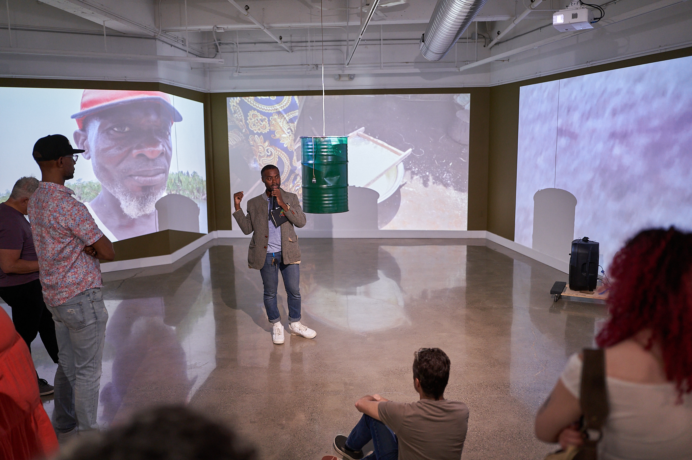

As an interdisciplinary artist and filmmaker, Léwuga Tata Benson’s work bridges cultures and explores the dynamic interplay between identity, environmental sustainability, and human connection.
Rooted in his Ogoni heritage in Nigeria, Benson draws inspiration from the tradition of repurposing to prevent waste. This ethos infuses Benson’s art, as seen in installations like The Land Gives Until It No Longer Can (2022), Hang in There (2022), Traces of Displacement (2023), Carrying Identity, Carrying The Weight (2023), and Fueling Change (2024).
Embracing Ogoni storytelling, Benson’s work engages all the senses, integrating songs, dance, and props, creating a holistic experience for visitors. His artistic practice incorporates these traditions to create immersive narratives that provoke thought, foster empathy, and celebrate cultural richness.
Benson’s journey has been marked by awards and accolades, including the NYSCA 2024 Support for Artists Grant and the Gregory Capasso Scholarship for outstanding work in film.

Contact: lewuga31@gmail.com